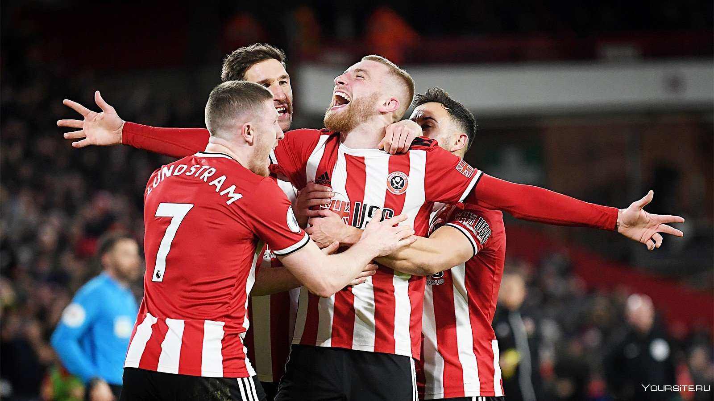
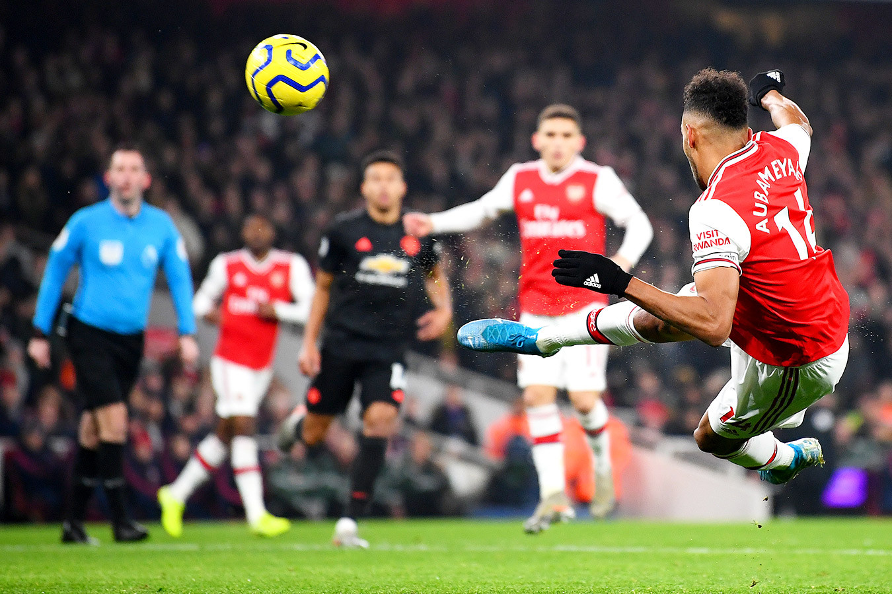
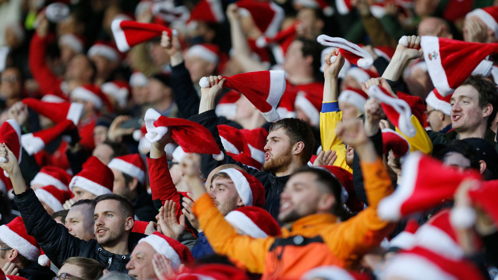
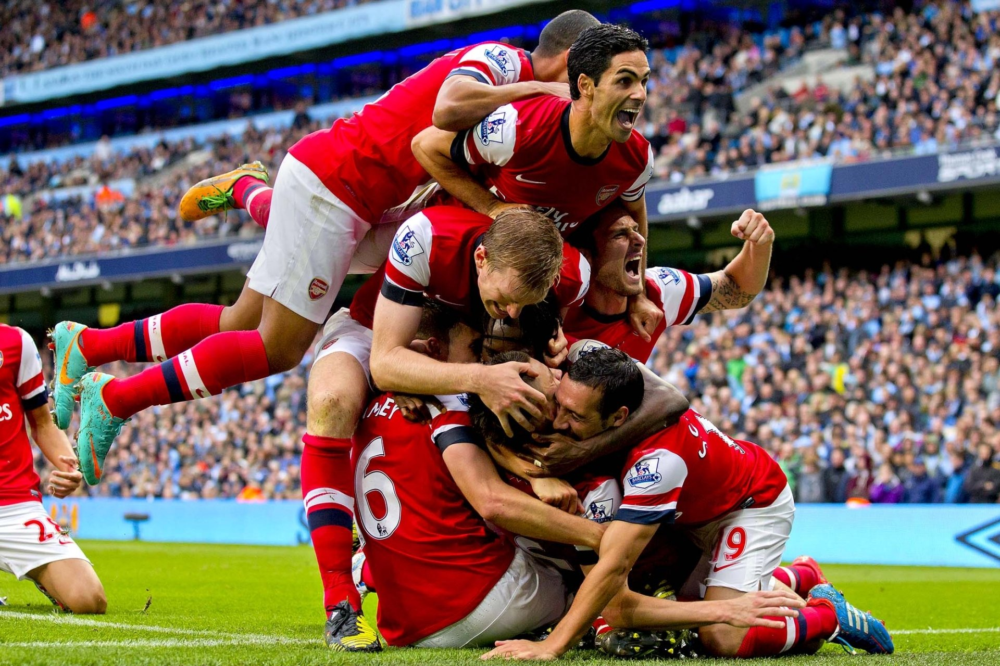

Футбол в Великобритании – это не только шоу, которое притягивает внимание миллиардов зрителей. Футбол стал частью культуры и образа жизни британцев. Англия по праву зовется "родиной футбола". Здесь окончилось "время младенчества" футбола, здесь он приобрел организационные рамки, здесь возникли первые клубы и союз, выработаны правила игры, начался розыгрыш первенства и Кубка. Англичане были популяризаторами, пропагандистами и учителями практически для всего мира. Англия располагает многими отличными игроками, сильными командами, бывшими долгое время сильнейшими, а позже примером для подражания футболистам нашей планеты.



